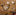

<output id="output"></output>
<script type="module">
  const session = await LanguageModel.create({
    expectedInputs: [{ type: 'image' }, { type: 'text', languages: ['en'] }],
  });
  const stream = session.promptStreaming([
    {
      role: 'user',
      content: [
        {
          type: 'image',
          value: img,
        },

        {
          type: 'text',
          value: 'Describe this image in a few words.',
        },
      ],
    },
  ]);
  for await (const chunk of stream) {
    output.append(chunk);
  }
</script>
